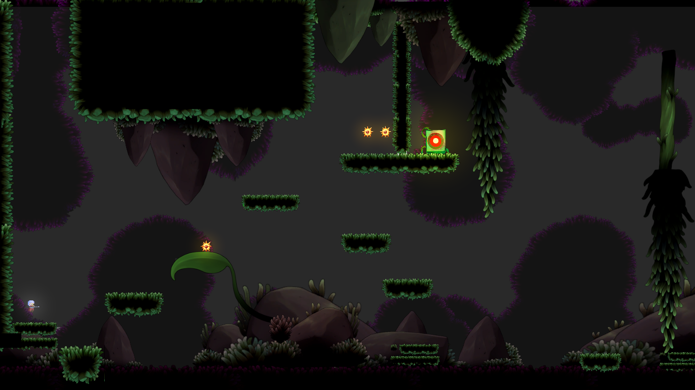
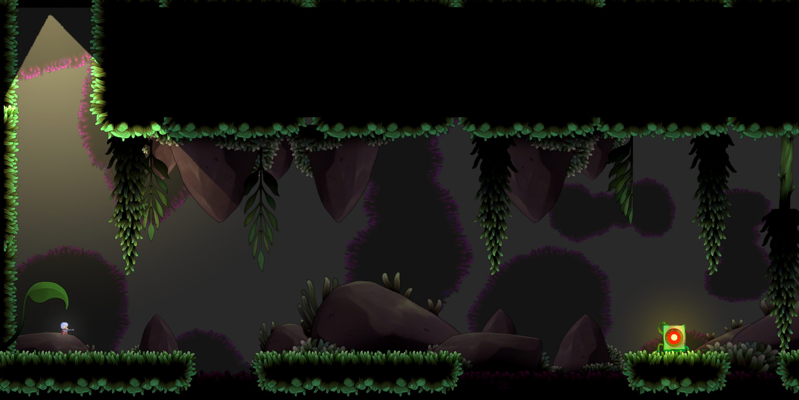
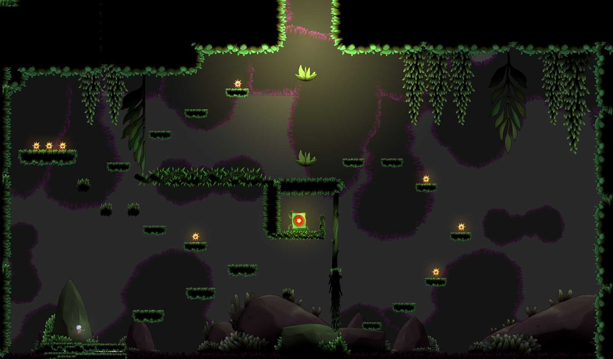

Context: AmmoBatics started as a two-week module—design, block-out, and prototype the core loop,
then build a small level pack to demonstrate depth with minimal mechanics. V1 (the five-level pack) was created within this timebox.
Goals for the sprint: prove the fun of gun recoil as movement, teach ricochet puzzles cleanly, and keep readability high.
Premise
A wandering boy discovers an alien sidearm in a field. He curiously fires—and the recoil hurls him backwards into
a hidden sinkhole. He wakes in a lush, bioluminescent cave system. The only way out is through: master the gun's physics,
bounce shots off ancient stone, open strange doors, and climb back to the surface.
The gun is both key and grappling hook: every shot is a negotiation between offense and movement.
V1 — Complete Spec (2-week Module)
Core Concept
Small verb set: Walk / Jump + Recoil Mobility via gun fire.
Ricochet bullets to hit remote targets and open doors.
Five short levels with Teach → Test → Twist cadence.
No lethal damage; failure is timing/aiming or ammo depletion.
UX & Readability
Minimalist cave tiles; bright collision edges for clarity.
Marker & door link VFX for obvious cause & effect.
HUD kept minimal—ammo count only.
Player & Weapon
No wall-jump; modest midair control.
Each shot applies an impulse opposite aim; stacks briefly.
Misses cost time, not lives—keeps experimentation high.
Level 4 — Routing with Limited Ammo
Three targets split across the room; order matters.
Finite ammo creates light planning—waste bullets and you reset.
First hint of multi-path (safe/long vs risky/short ricochet).
Level 5 — Capstone Chain
Blends skills: bank shot → double recoil climb → door run.
Big "aha" finale once the chain clicks. No lethal hazards yet.
Exit vignette points to "deeper caves" (seed for Metroidvania).
Takeaway: The verb set is tiny, but expression is wide—great candidate for an interconnected map.
V1 Learnings & Drawbacks
What Worked
Recoil mobility is expressive and rewarding.
Ricochet puzzles create strong "aha" moments.
Small rooms make goals and affordances clear.
Pain Points
Ammo soft-locks caused restarts and broke flow.
No threat model → low tension; mistakes cost little.
Players struggled to read recoil vectors; no preview.
Resets punished experimentation.
Finite rooms capped the sense of world and routing.
Design Opportunity: Switch to regenerating ammo with slot upgrades, add light hazard model, provide laser/trajectory previews, move to an interconnected map with checkpoints and optional challenge routes.
Narrative Continuation: Deeper in the caverns, alien machinery responds to the gun. Doors hum awake; flora bristles.
The boy gradually understands the weapon—gaining bullet slots and impulse control as confidence (and upgrades) grow.
The exit is rumored near the old lava conduits—reach them, and you might find a shaft to the surface.
V2 — Metroidvania Design
Pillars
Recoil = Movement (laser + first-bounce preview).
Flow over Failure (regen ammo, checkpoints, healing).
Tension with Fairness (self-damage, readable hazards).
Rootworks: door chains, enemies; optional +1 slot.
Shortcuts: unlock loops back to hub.
Final Gate: multi-room traversal exam → exit.
Visual Gallery
V1 — Wide room with mid platforms (teaching recoil hop).
V1 — Ricochet classroom with caged target.

V1 — Vertical climb; safe chambers and collectibles.

V1 — Compact arena; door switch and enemy placeholder.

V1 — Linear corridor; timing & cadence setup.
Conclusion & Future Prospects
V1 validated the core loop—recoil as movement—and clarified readability needs. V2 builds on those
lessons with regeneration, checkpoints, previews, and an explorative structure that lets players feel
stronger as they learn. The next steps deepen expression without bloating verbs.
Short-Term
Boss-style traversal exam (no HP sponge; movement puzzle).
More enemy utilities (projectiles as moving platforms, timed hazards).